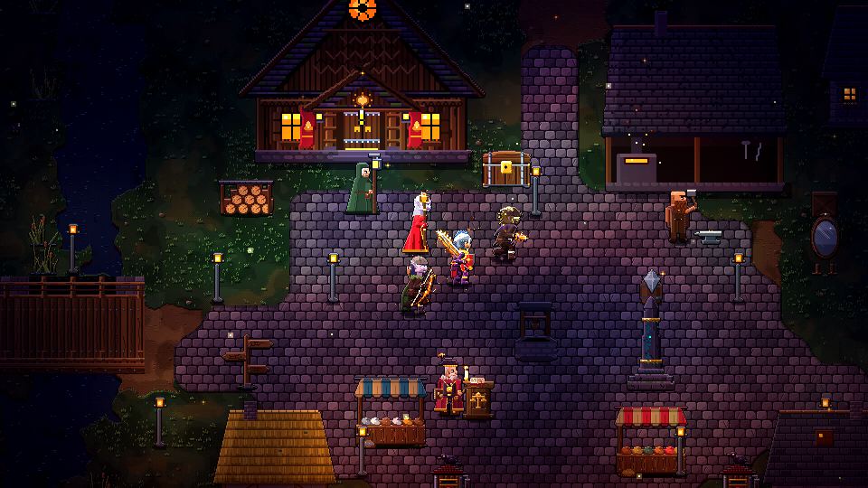
Stufe 1 bis 40
Von der Glutsenke zum Aschethron
-
1–5
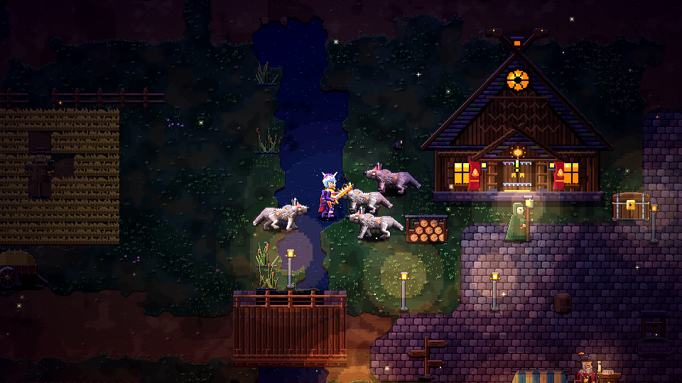
Startgebiet
Glutsenke
„Die Glut in der Senke wird unruhig.“
Maren, Dorfälteste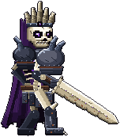
Die Katakomben Stufe 3–6Varkhul, der Knochenfürst -
6–11
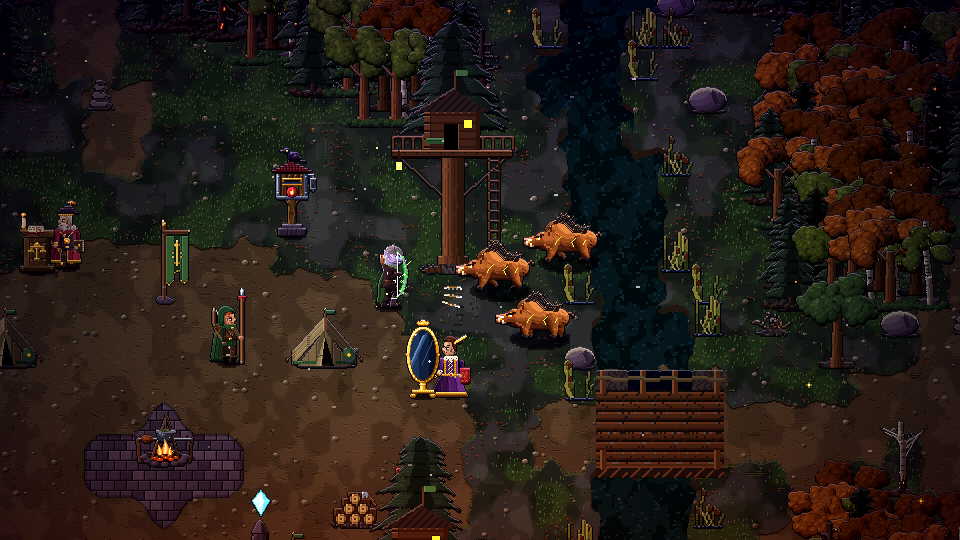
Wildnis
Der Aschenwald
„Bleib auf den Wegen.“
Ilsa, Waldwächterin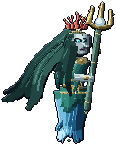
Der Versunkene Tempel Stufe 10–12Nerith, die Ertrunkene Priesterin -
10
Die Glutarena
Eins gegen eins, alle auf Stufe 40 in gleicher Rüstung.
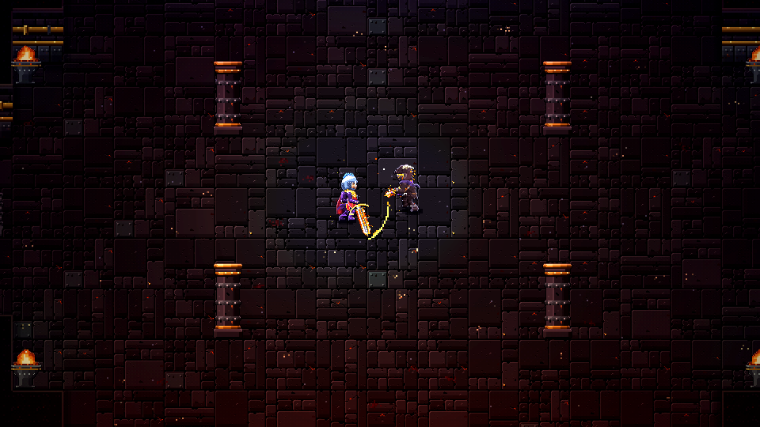
-
12–17
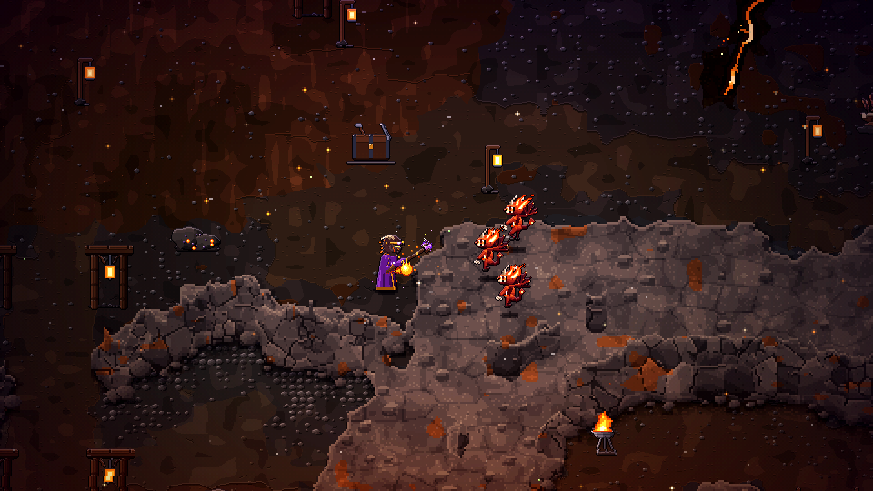
Wildnis
Die Schlackenhöhen
„Die Feste hält. Noch.“
Hale, Kommandant der Rauhwacht -
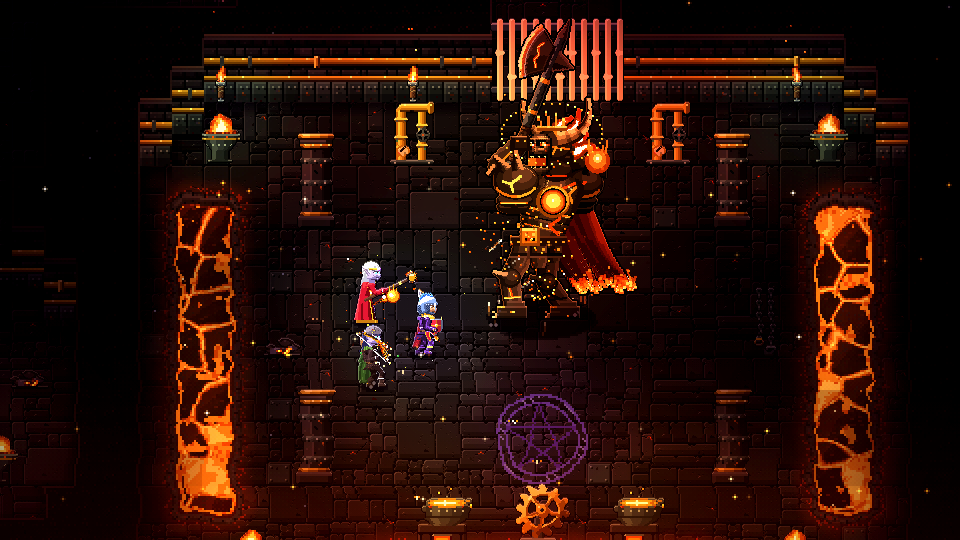
17–20Die Glutschmiede
Ignaroth, der Glut-Tyrann
-
20
Ab Stufe 20 reitest du
- Steppenpferd
- Frostelch
- Reifschwinge
- Aschenwolf
-
20–25
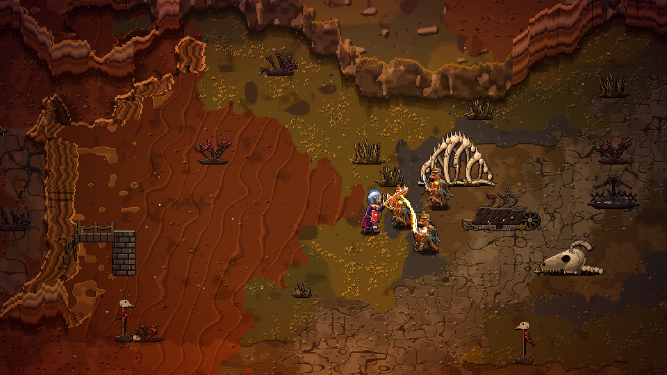
Wildnis
Die Aschensteppe
„Ein Reittier sucht sich seinen Reiter aus.“
Orla, Stallmeisterin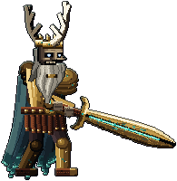
Das Heulende Hügelgrab Stufe 24–26Ulgrim, der Hügelkönig -
25–31
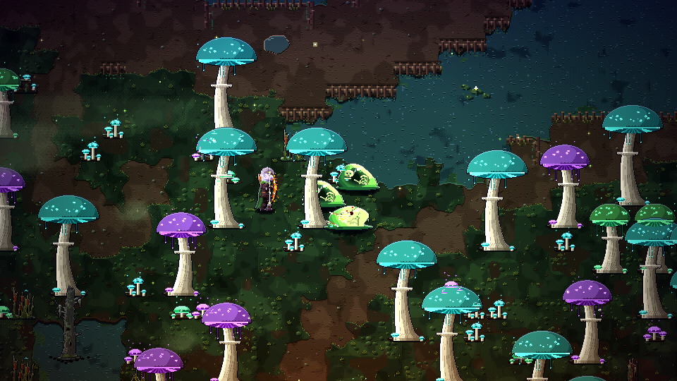
Wildnis
Die Faulmarsch
„Die Sporen sind heute gierig.“
Thane, Moorwächter -
31–36
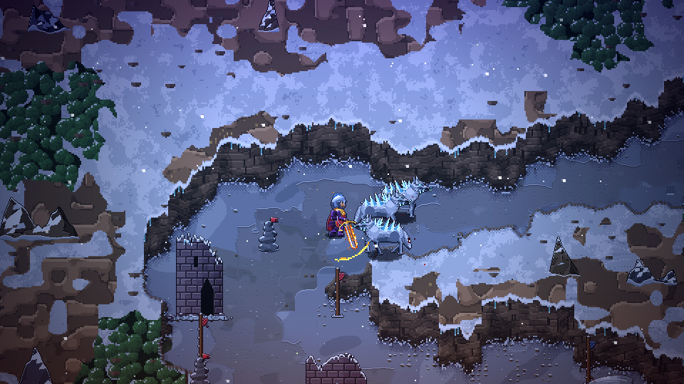
Wildnis
Die Frostzinnen
„Der Winter hier oben verzeiht nichts.“
Eskil, Jarl von Frosthold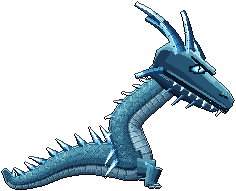
Die Reifhöhlen Stufe 35–37Skalvyr, der Frostwurm -
Bis zu 40 Spieler in jeder Welt
In den Städten: Auktionshaus, Postfach, Auftragsbrett und Wegstein.
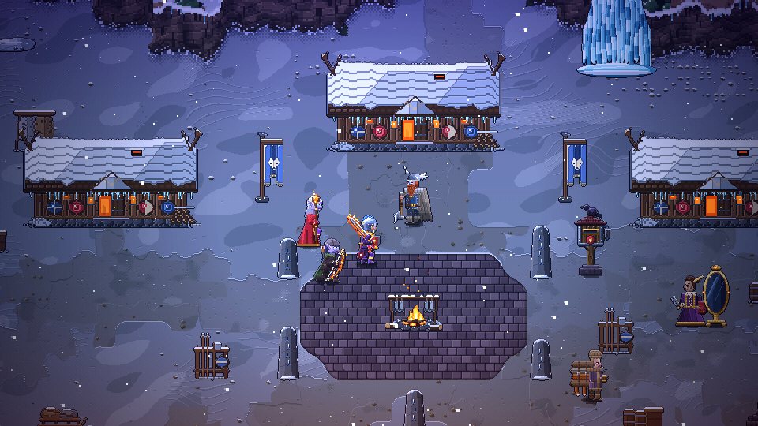
-
36–40
Wildnis
Die Glutöde
„Hinter diesen Mauern endet die Welt. Vor ihnen beginnt der Thron.“
Corvane, Marschall der letzten Bastion
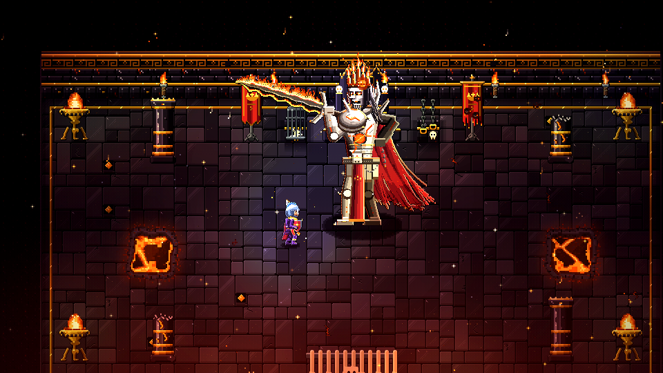